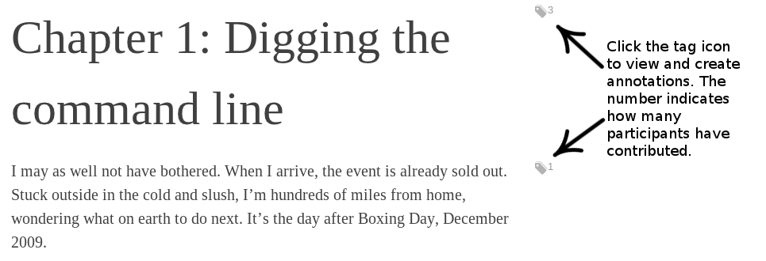

Working...
Communicating with Fluidinfo... 
Oops!
Something appears to have gone wrong. Please see
the report below.

Annotate this!
Read
Barefoot into Cyberspace online. Share
your thoughts in annotations. Read other's comments.
This site makes "Barefoot" a collaboration growing
from the seed planted by
Becky.
Read the
help page
to learn how to use this site. Check out the
colophon to
discover how and why the site was built.
Start reading
Legalese
This work is made available under a
Creative Commons Attribution-ShareAlike 2.0 UK: England
& Wales Licence. You are free to:
- copy, display and perform the work
- make derivative works
- make commercial use of the work
With the following conditions:
- Attribution. You must
attribute the work in the manner specified by the
author or licensor (but not in any way that
suggests that they endorse you or your use of the
work).
- Share Alike. If you alter,
transform, or build upon this work, you may
distribute the resulting work only under the same
or similar licence to this one.
- For any reuse or distribution, you must make
clear to others the licence terms of this work. The
best way to do this is with a link to
http://barefootintocyberspace.com/book/hypertext
Colophon
This web-application was created by
Nicholas
H.Tollervey
(@ntoll on
Twitter) in the first week in 2012. It's entirely
written in client-side Javascript and the source code is
freely available
here.
It uses the following Javascript libraries:
Styling is provided by
Bootstrap and the feedback widget is from
Uservoice.
Getting Started with Fluidinfo
This web-application is a programming example in the
O'Reilly
book Getting Started with Fluidinfo (whose
Flying
Spaghetti Monster like cover animal is shown to the
right). The design and implementation is explored in detail
towards the end of the book. However, a summary is given
below.
Fluidinfo is a "social" datastore based upon the
simple concept of tagging things with useful information.
Put simply, you tag data on objects about things. In the
case of this application, there are a set of objects in
Fluidinfo that represent each block of text in the work
that is Barefoot into Cyberspace. Each of these
objects has a unique about value tagged to it to
identify it (using the special fluiddb/about tag).
For this application we've used about values that follow
this naming scheme:
barefootintocyberspace:CHAPTER:POSITION
Where CHAPTER and POSITION are replaced
by a chapter's short name and block number respectively.
For example, the object whose about value is:
barefootintocyberspace:prologue:2
represents the second block of text in the
prologue chapter.
Each of these objects will have at least the following
six tags and associated values (in addition to the
fluiddb/about tag that identifies it):
- beckyhogge/html
- The HTML content of the block represented by the
object.
- beckyhogge/licence
- A link to the block's licence.
- beckyhogge/work
- A reference to the object about the work that is
Barefoot into Cyberspace.
- beckyhogge/parent
- A reference to the block's parent object (usually
the block's chapter).
- beckyhogge/position
- The position of the block within its parent block.
- beckyhogge/references
- A list of any references contained within the block.
When someone creates an annotation a comment
tag is attached to the object representing the block of
text. The associated value is a string containing a list of
one or more comments. Comments are deliniated by the ¶
(Pilcrow) character like this:
Fri, 13 Jan 2012 21:50:57 GMT
Comment 1
¶
Fri, 13 Jan 2012 21:51:01 GMT
Comment 2
Each comment starts with its creation time expressed as
a human and machine readable version of universal time. The
comment starts on the next line until the pilcrow is
reached.
This way of storing comments has several benefits:
- Re-use of the comment tag convention.
- Comments are searchable with the
matches keyword in Fluidinfo's query
language.
- Comments are both human and machine readable.
- It's very very simple (keep it simple stupid).
Use the feedback link at the top of this page to
ask questions. To report a bug or request
a feature visit the project's
homepage on Github.
Alternatively, fork the project and build something
amazing.
Comments, suggestions and critique are most welcome!
Using this Application
Well done, you've found the help page. This proves that
you're at least capable of navigating a UI and clicking on
a "help" link. ;-)

As the about page states,
this simple web-application allows you to contribute
annotations to
Becky Hogge's book
Barefoot into Cyberspace.
Furthermore, you get to see what others have annotated
(each block of text has an associated timeline of comments).
As a result, this application turns "Barefoot"
into an evolving collaboration of annotations coalescing
around the original work.
To read a chapter click the "Contents" link at the top
of this page and make a selection.
When reading a chapter click on the tag icons next to each
block of text to see the annotations people have left
(see the image below). If there is a number next to the tag
it indicates the number of participants
annotating the specific block of text (not the
total number of comments). Click the "close"
button to dismiss the annotations and return to reading the
chapter. You'll sometimes see links within the text. Often
these work just like regular links by taking you to another
page on the web. However, some links are really references.
When you click these a pop-over will appear with the
relevent reference displayed inside. Try it now by clicking
this link (clicking the
link again hides the popup). At the bottom of each page
are two buttons (Previous and Next) that
allow you to move easily between chapters.

What you may not know is that this application is also
a programming example in a book about the openly writeable
data store Fluidinfo. Getting Started with
Fluidinfo is published by O'Reilly. Technical details for this
application are explained in the colophon.
In order to contribute annotations
you need to have a Fluidinfo account. Sign up at
Fluidinfo's account creation page. Make
sure you don't sign up using Twitter.
Return here and sign in with your username and password by
clicking the login link at the top right hand side
of this page.
Once logged in you'll notice that when you display the
annotations there is also an Annotate this! button
that displays a form. Click the "Submit" button to add an
annotation. Your annotations will have a delete
link next to them. Clicking it removes the annotation. You
can annotate as many times as you like on any number of
blocks of text.
Submit feedback about this application (not the
work Barefoot into Cyberspace) at any time
by clicking on the
feedback
link at the top of the screen.
That's it and have fun! :-)